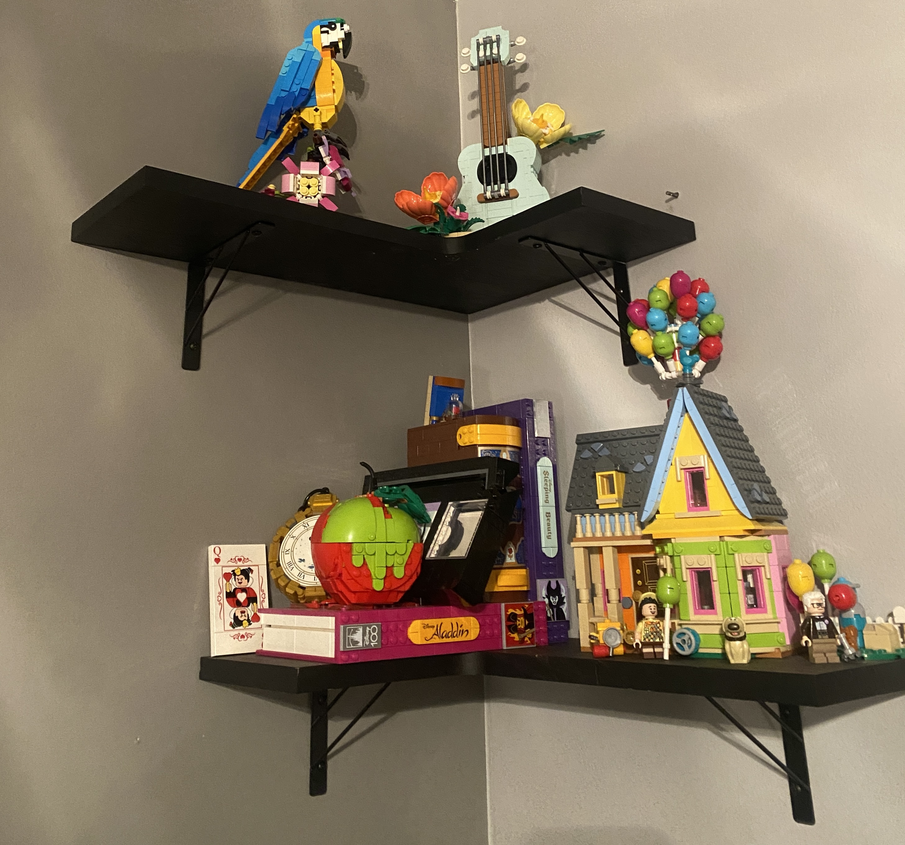

One of my many interests are building legos. I started building legos when I was younger, but ended up stopping for a little bit. I recently started back up and have thirteen in my collection at the moment. these are four from my collection
In 1932, Ole Kirk Christiansen began creating wooden toys in his workshop in Billund, Denmark. About two years later Christiansen created a company and gave it the name of LEGO. What he didn't know is that this was the start of a brand that would become international. In 1949, the company created their first brick made of plastic with interlocking studs on the top and holes in the bottom. In 1958, Kirk Christiansen's son took over the company. Fast-forward to 1968, the LEGO brand caught wind in Europe, creating the first theme park called LEGOLAND. Soon after, the LEGO brand began spreading throughout the world. In 1998, LEGO was inaugurated into the U.S. National Toy Hall of Fame. LEGO has partnered with multiple games, creating LEGO versions of different pop-culture properties. To learn more about the history go to The Lego Website